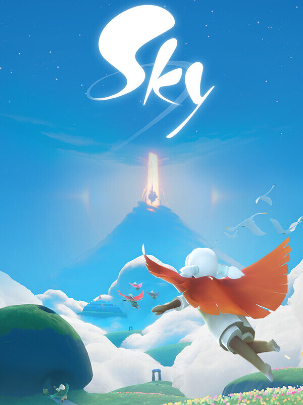

Sky - Filhos da Luz
Sky - Filhos da Luz
Detalhes
 |
|
| Tempo de jogo | Não Jogado |
| Última Atividade | Nunca |
| Adicionado | 07/06/2026 0:35:52 |
| Modificado | 07/06/2026 0:44:16 |
| Status de Conclusão | Not Played |
| Biblioteca | Steam |
| Fonte | Steam |
| Plataforma | PC (Windows) |
| Data de Lançamento | 11/07/2019 |
| Pontuação da Comunidade | 70 |
| Avaliação da crítica | 82 |
| Pontuação do Usuário | |
| Gênero | Adventure Indie Puzzle Role-playing (RPG) |
| Desenvolvedor | ThatGameCompany |
| Editor | NetEase Games ThatGameCompany |
| Funções | Co-Operative Massively Multiplayer Online (MMO) Multiplayer Single Player |
| Links | Twitter YouTube Google Play Official Website Wikipedia Discord App Store (iPhone) App Store (iPad) Twitch Steam Subreddit Community Wiki Playstation Nintendo |
| Tag | |
Descrição

Bem-vinda a casa, Criança.
Recupera o teu espírito de encanto infantil neste jogo de aventura social.

Os Reinos de Sky precisam da Luz dentro de ti para curar o mundo da Escuridão.
Procura os Espíritos dos teus antepassados. Alguns deles estão presos cá—e precisam da tua ajuda. Tens o poder de os libertar e os devolver à sua casa entre as estrelas.
CARACTERÍSTICAS

EXPLORA UM MUNDO ABERTO
Um Reino puro e aconchegante repleto de aventuras e encantos. O local perfeito para passar tempo com amigos—ou para uma escapatória diária para aqueles que preferem relaxar e descontrair sozinhos.

AVENTURA SEM FIM
Embarque em missões, resolva quebra-cabeças e explore as ruínas de uma civilização antiga. Levante voo, faça amigos e enfrente desafios para derrotar a Escuridão. Toque música, assista a concertos e organize festas na sua casa no jogo.

UMA HISTÓRIA PROFUNDA E EXPANSIVA
O Reino está despedaçado e repleto de fragmentos do que veio antes. Descobre relíquias, decifra murais e solta Espíritos ancestrais retidos por um cataclismo antigo. Através de uma narrativa gradual e ambiental, descobre a história profunda deste mundo—e o teu lugar no coração de tudo.

EXPRESSA A TUA INDIVIDUALIDADE
Uma comunidade bondosa e inclusiva está à espera para te receber a ti e aos teus entes queridos. Expressa o teu estilo pessoal com um catálogo de cosméticos em constante expansão; conecta-te com outros jogadores através de expressões encantadoras e belissimamente animadas. Sky convida-te e encoraja-te a seres quem quiseres.

UM MMO SOCIAL
Não te esqueças de procurar outros Filhos de Sky! Alguns são novatos, como tu, mas muitos outros já aqui estão há muito tempo—e adoram guiar recém-chegados como tu.